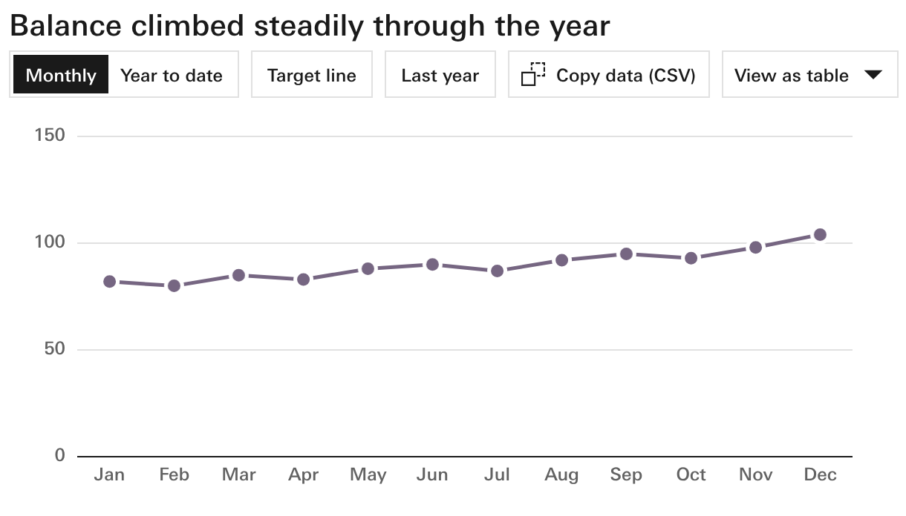
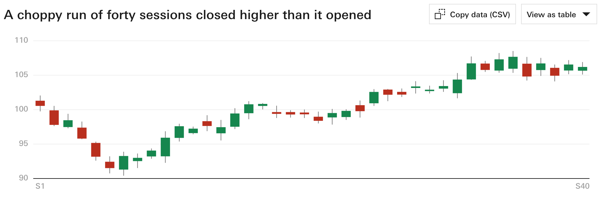
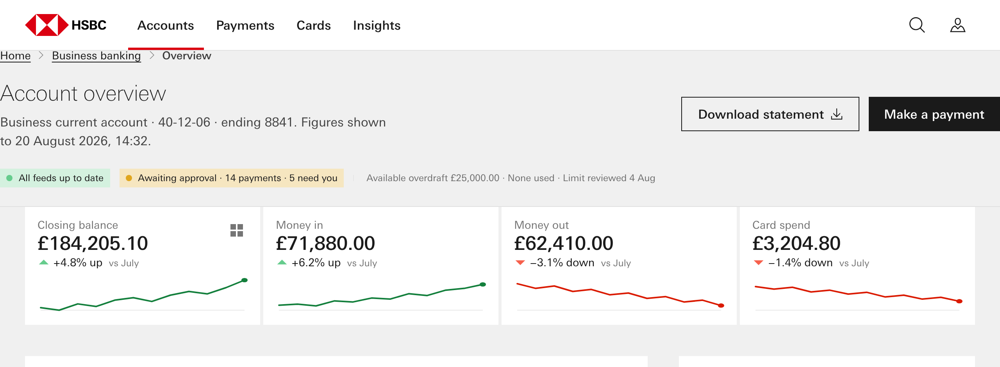
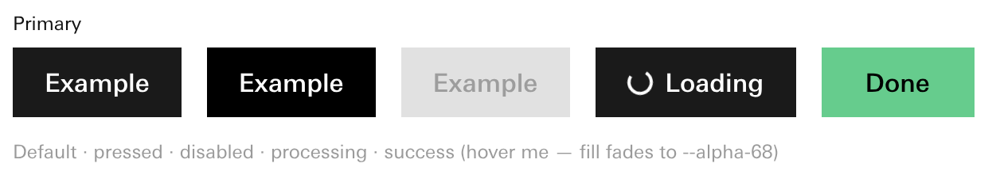
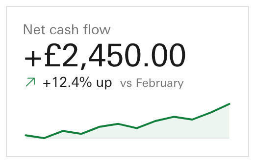
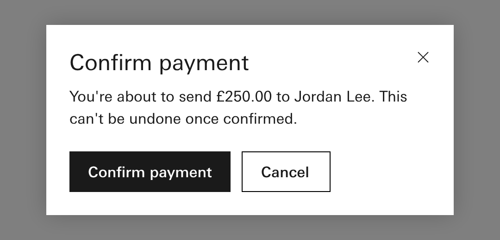
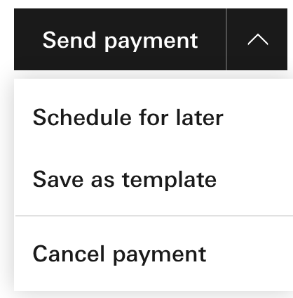
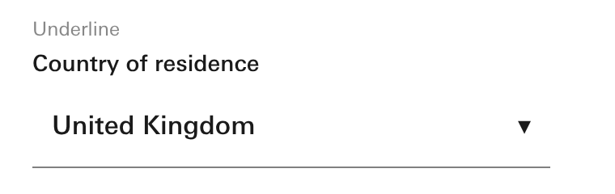

Apollo · decision page 5 of 6 · session 304
The rules that pick a part for a question, the three gaps the probe found in them, and your three Thursday observations as rules in the graph.
add is that bento sections must have the lightest grey background so there is definition between the white tiles and the background. but this doesn't mean the full page nor does it mean and top title section only the pages section on which the bento sits.
and can we make sure it retrieves the components well, sometimes it made buttons and table headings way smaller than they should.
and question the choice of using a model when and a split button or drop-down would be better. these are observations that we will role into the graph at some point. If we can not make this to explicit, I don't want it to be a set of instructions as that should be part of the graph and I may share the prompt with the audience.Dave · Thursday 24 September 2026, 15:46
The answer first
Add two clauses to the line chart's rule, let the chooser read each part's own question and data shape, and give the data grid a rule. Put your three observations into the graph as proposed rules, with the grey on the bento section and not the page.
A when-rule says when a part is the right answer. 39 of 138 parts have one. The probe asked the chooser 20 plain questions with the answers written down first. Two clauses and one missing rule account for every wrong pick.
The twentieth miss is the data grid, which has no rule at all (question 3). The expected answers were written by the probe before it ran; they are its reading, not a ruling. The chooser takes a quarter of a millisecond per pick.
Part one
Three questions from the MCP probe. They feed both the pack's composer and the Apollo-MCP chooser.
Question 1 · the cash view and the candlestick
Recommend: yes, both clauses. Because the line chart's own sentence already says it gives way when units differ or when all four prices are the point; the clauses make that sentence something the chooser can read.
Asked for a treasurer's cash balance over the last 30 days, today's reader offers four charts for one panel, a candlestick among them. The chooser rules the candlestick out only when it is told the data shape.
Right for a cash balance · line chart

Also offered today · candlestick

answers = change-over-time AND series 1–5 on ONE continuous time axis AND axes = present AND span.cols ≥ 6 AND units = same AND shape = time-series × 1–5-series
In the what-if run, the first clause hands two measures in different units to the combined chart, and the second hands a day's four prices to the candlestick. No other pick changed.
answers = change-over-time AND series 1–5 on ONE continuous time axis AND axes = present AND span.cols ≥ 6
The line chart keeps winning both cases on its higher priority, and the sentence that says it should give way is never read.
Question 2 · what the chooser reads
Recommend: yes. Because those two fields are already the one home you ruled for a part's question and its data shape, so reading them adds no second source.
Misses the day of open-high-low-close prices, because the line chart's rule never states its shape.
Every part's shape has to be written twice: once in its shape field, once in its rule.
Catches the candlestick case even before question 1's clause is added.
One home per fact. The chooser still only rules a part out when a claim is false, never on a guess.
Question 3 · the data grid
Recommend: yes, with the field named "needs". Because the list's own rule already says it yields to the data grid when sorting, filtering, selecting or editing is required, and nothing can read that yet.
records ≥ 2 AND needs in (sort, filter, select, edit)
"needs" is one plain word with four values. The filter bar, the footer and the list's data shape get rules drafted the same way, for you to see at the wrap.
Asked for a sortable, filterable grid, the chooser picks the list, because the grid can never be picked on evidence.
The grid would only ever appear when a template names it.
Your ruling of 15 September lets a lane add a field name, with its definition, for you to see at the wrap. The rule's wording is what is put to you here. Estimate: the dashboard's missing rules in one lane, about an hour.
Part two
Drafted as proposed rules with links to the parts they govern, not as instructions in a prompt, as you asked. You ratify them at the cut.
Question 4 · the bento ground
Recommend: yes, in light mode. The page and the title area go white; the section the bento sits on takes the lightest grey. Because it is your later and more exact word, and your own 25 August rules already allow it.
This clashes with what is built. On 25 August the twelve defaults you exported set the dashboard's page ground to grey and the bento's own ground to clear. So the whole page is grey today, the title area included. The same day you also ruled that the page ground is a page decision and the bento's ground is the section's decision. Your Thursday sentence swaps the two defaults inside those rules.
Built today · the whole page grey

Look at the title area, "Account overview": it sits on the same grey as the bento, and the status chips with it.
Your sentence · the bento section only
The title area is white. The grey starts where the bento section starts, so the white tiles still read against it.
Both are the real dashboard bento template, rendered at your seat, demo bar hidden. The right-hand one adds three lines of style for this page only (page white, title area white, bento section grey); canon is not changed. In dark mode the question stays open: today the dark page grey and the dark tile surface are the same colour, so the bento would disappear.
Question 5 · every part at its own size
Recommend: yes, a proposed rule on every part, and a size check that compares each part on a composed page against its reference render. Because on Thursday buttons and table headings came out smaller than they should, and no gate measures size today.


Proposed wording, for yours: "A part keeps its own size on any page. The page arranges parts; it never shrinks them."
Question 6 · the lightest pattern that does the job
Recommend: yes, a proposed rule, with "gives way to" links from the modal to the split button and the drop-down. Because today the modal, the split button and the drop-down have no when-rule and no such links, so the graph has nowhere to say it.



Proposed wording, for yours: "Use the lightest pattern that does the job. Before a modal, ask whether a split button or a drop-down would do." The modal keeps its place when the person must stop and confirm, as in the payment above.
All three are rendered from their reference snippets; the modal was opened by a click, as a person would open it.
Technical
Sources. notes/_subreports/2026-09-26-304-R5-mcp-probe.md §5c and decision 5 · notes/_lanes/304/R5/when-eval-results.json, when-whatif-results.json, SPEC-when-evaluator.md (test table W1–W18: variant A 17/20, B 18/20, reader 15/20; what-if on variant A closes W1c and W10 with no other change; W18 remains) · notes/_subreports/2026-09-26-304-A3-future-state.md gap 3 (a)–(c) · notes/_lanes/303/WRAP-BRIEF.md:30-34 (Dave verbatim, Thu 2026-09-24 15:46) · knowledge/components/chart-line.meta.json, list-items.meta.json, template-dashboard-bento.meta.json (pageBg: grey, bentoBg: transparent, $awaitingDave dark ground 1.00:1) · knowledge/when-fields.json.
Ruling ids behind the words. "The one home you ruled for a part's question and its data shape" = s254-D2 items 1 and 4. "Your ruling of 15 September" = s273-D4 (the when list is a registry; a lane may add a field by addition). The bento clash: s219-D1 (3) and (5) ship the twelve exported defaults, dashboard pageBg=grey, bentoBg=transparent; s219-D3 (4) moves pageBg out of the bento grammar as a page decision (white or the light greys) and (5) makes bentoBg the section ground. Dave's Thursday sentence therefore changes s219-D1's shipped dashboard default within s219-D3's rails; it does not contradict s219-D3. Proposed nodes would join the principle nodes (ux:<id>, s275) with yieldsTo edges for question 6.
A date to correct. The plan page calls the full-page grey "the ruling of 22 August"; the store dates s219-D1 and s219-D3 2026-08-25 (both enacted, back-stamped by Run 2). This page uses 25 August.
Specimens. notes/_lanes/304/R6a/specimens/*.png from notes/_lanes/304/R6a/specimens.py at Dave's seat. bento-his-top.png adds body{background:var(--page)} .tpl-header{background:var(--page)} main.tpl-page{background:var(--wall-ground)} in the render only. chart-line.png is shot with the snippet's fit option off (the JS-off height). The modal was opened by clicking its trigger. Build: notes/_lanes/304/R6a/build.py. Report: notes/_subreports/2026-09-26-304-R6a-decision-pages.md.